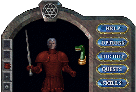

次期拡張（宝珠の守人）では、新しい装備品としてタリスマン（Talisman）が出現します。ここでは、その効果について まとめていきます。
１．タリスマンの形状
タリスマンの形状は下の4通りとなっています。1キャラクターにつき1つ装備でき、ペーパードールのように表示されます。- タリスマンの形状


- タリスマン装備

２．タリスマンの性能
タリスマンには、下に示す効果が付与されます。- ダメージ増加 ： （1種類の動物・モンスター）killer 10〜100％
1種類の動物およびモンスターに対して、武器直接攻撃のダメージが増加します。特効やEnemy of Oneなどのように ステータス欄の攻撃力に乗算されます。（特効などとの組み合わせで3倍ダメージの制限有り）
- ダメージ減少 ： （1種類の動物・モンスター）protection 5〜60％
1種類の動物およびモンスターからの、直接攻撃によるダメージが軽減されます。 魔法やブレスによるダメージには効果はありません。
- 成功率ボーナス ： （生産系スキル）ボーナス（高品質ボーナス） 11〜30％
生産系スキルの作成成功率（高品質作成成功率）が加算されます。
作成成功率は、実際のスキルが作成可能スキル以上となっているものについて加算されます（補正込み、人間の場合は最低スキル20）。
高品質作成成功率が0％未満でもボーナスが加算され、0％以上になる場合があります。
これは、高品質成功率が（作成成功率−60）％[スキル95まで、100以上では（作成成功率−45）％]となっているためです。
このボーナスが付加されるスキルを下に示します。テスト時に存在していたDragon smithing（鍛冶、鱗鎧）は廃止されました。- Blacksmithing（鍛冶、鱗鎧もこちらに含まれます）
- Tailoring（裁縫）
- Tinkering（細工）
- Alchemy（錬金術）
- Glassblowing（錬金術−硝工）
- Carpentry（大工）
- Masonry（大工−石工）
- Cooking（料理）
- Fletching（弓作成）
- Inscription（書写）
- Cartography（測量）
なお、作成成功率が上昇するタリスマンを装備し、スキル上げに適した作成成功率（30〜70％程度）に調整しても スキルは上がりやすくなりません。スキル上昇の判定は、タリスマンを装備していない状態での作成成功率が影響します （→スキル上げについて調べた結果）。
- 特効効果
対象となる敵に対し、武器攻撃によるダメージが2倍になりますが、アンデッド系モンスターから受けるダメージが1.5倍となります。
タリスマンに付加される特効の種類を下に示します。Orc mageに対し、オーク特効武器＋メイジ特効タリスマンを装備した場合、 ダメージが3倍となります（3倍上限にかかる）- メイジ ： Orc mage, Skeletal(Bone) mage, Lich類, Meer mage, Juka mage
- フレイム ： Hellcat, Hellhound, Lava snake, Giant lava serpent, Lavalizard, Fire steed, 火エレ
- アイス ： アイスダンジョンの多くの敵（蛇、蜘蛛、トロル、スライム、雪・氷エレメンタル、氷デーモン）, 白熊, 雪豹, Lady of the snow
- ヴァーミン ： Ratman系, Rat, Sewer rat, Giant rat
- ビートル ： Deathwatch beetle (hatching), Giant beetle, Fire beetle, Rune beetle
- バード ： 小鳥類（Crow, Magpie等）、Eagle類（Phoenix, Swoopも）、Crane、Osterd類
- ベア ： 熊類
- ボーヴァイン ： ウシ系, Gaman, ミノタウロス類
- コウモリ ： Vampire bat, Mongbat
- 召還、回復効果
この効果が付与されているものは、装備状態でタリスマンをダブルクリックすることにより、 効果を発現させることができます。ただし、チャージ数が表記されているものは使用回数に制限があります。
チャージの有無にかかわらず、1回使用した後に再び使用するには一定の時間装備していることが必要になります。- Damage Removal ： 毒などの時間経過ごとのダメージを除去することができます。（再使用には1200秒）
- Ward Removal ： （再使用には1200秒）
- Wildfire Removal ： （再使用には1200秒）
- Curse Removal ： Curseなどステータスに影響した効果を除去するができます（再使用には1200秒）
- インゴット Summoning ： 1チャージごとに、Ironingotを10個取得できます。（再使用には60秒）
- Bandage Summoning ： 1チャージごとに、包帯を10枚取得できます。（再使用には60秒）
- Board Summoning ： 1チャージごとに、普通のBoardを10枚取得できます。（再使用には60秒）
- 特定生物 Summoning ： 特定の生物を召還することができます（再使用には1800秒）
- Creatures ： ランダムに生物を召還することができます（再使用には1800秒）
チャージ（使用回数）が0になったタリスマンは、Runed switchを使うことでチャージを回復することができます。
- オーナー
最初にそのタリスマンを装備した者がそのタリスマンの所有者となり、Bless状態になります。所有者が設定されたタリスマンは、 他者が装備することはできなくなります。
出現率は低めに設定されています。